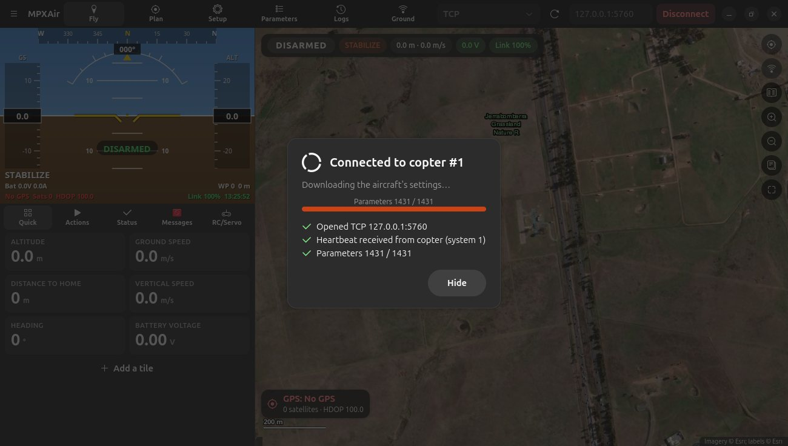

Connecting to your aircraft
USB, telemetry radios, UDP and TCP — and what the connection window tells you.
Choose a connection
The connection controls are at the top right of the window: the connection list, a refresh button, the baud rate or address, and Connect.
| Connection | Use it for | Settings |
|---|---|---|
ACM0 · …, USB0 · … | A flight controller on USB, a telemetry radio, or a ground station board | Baud rate: 115200 for USB flight controllers, usually 57600 for radios |
| UDP listen | Wi-Fi telemetry, companion computers, other software forwarding MAVLink | Port, usually 14550 |
| TCP | The ArduPilot simulator, network bridges | host:port, e.g. 127.0.0.1:5760 |
| UDP send | Sending to a fixed address | host:port |
| Demo drone | Trying MPXAir without hardware | — |
USB devices are listed with a short name, for example ACM0 · Espressif. Open the list to see the full name.
New devices are noticed as soon as they're plugged in.
The connection window
When you press Connect, a window shows each step, like Mission Planner's:
- Opened the port or address.
- Heartbeat received from the aircraft, with its type and system ID. This is the proof the air unit is talking to you.
- Parameters counting up, for example 812 / 1431.
- Mission, Geofence and Rally points read from the aircraft.
It closes on its own a couple of seconds after everything has loaded. Press Hide to close it early (loading carries on), or Cancel while it is still waiting for the heartbeat.

Ground station only (aircraft off)
If you connect to a ground station board (for example the RFD900 + ESP32 board) while the aircraft is switched off, MPXAir keeps the link open and says Waiting for aircraft. The ground station's GPS is shown straight away. When the aircraft powers up, MPXAir connects to it and loads its parameters automatically.
Disconnecting
Press Disconnect (top right). A window asks you to confirm, because you'll lose telemetry and control of the aircraft from MPXAir. If the aircraft is armed, the warning says so, and reminds you that its ground-station failsafe may trigger.
After you confirm, MPXAir closes the port completely, stops Follow Me and any automatic reconnect, and confirms Disconnected — /dev/ttyACM1 is free for other programs. You can then open the port in another program, such as the GCS Settings page or Mission Planner.
While MPXAir is connected it has the serial port to itself, and other programs get a "busy" error. If another program already has the port open when you press Connect, MPXAir tells you which one.
Automatic reconnect
If a USB device drops off (unplugged, or a power dip on the board), MPXAir shows Reconnecting… and waits up to two minutes.
It recognises the same device by its unique USB ID, even if it comes back under a new name (for example ttyACM1 instead of ttyACM0),
then reconnects and reloads everything. Press Stop to give up. It never reconnects after you press Disconnect yourself.
Telemetry recording
Everything received while connected is saved to a telemetry log (.tlog) in
~/Documents/MPXAir/telemetry-logs. You can replay it later. Turn this off in Preferences → General.
If it doesn't connect
- No heartbeat within 30 seconds. Check that the aircraft is powered, that the right port is selected, and that the baud rate matches the radio (57600 for most SiK/RFD radios).
- Permission denied. Add yourself to the
dialoutgroup (see Troubleshooting). - The port isn't in the list. See a USB device disappears.